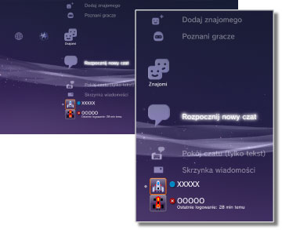

Znajomi > Kategoria Znajomi
Kategoria Znajomi
Aby używać tej funkcji, może być konieczne zaktualizowanie oprogramowania systemowego.
Za pośrednictwem sieci PlayStation®Network można wysyłać i odbierać wiadomości lub prowadzić czat z innymi użytkownikami konsoli PS3™. Korzystanie z tych funkcji wymaga utworzenia (rejestracji) konta PlayStation®Network. W kategorii  (Znajomi) wyświetlane są następujące ikony. Wyświetlane ikony różnią się w zależności od sposobu korzystania z usługi.
(Znajomi) wyświetlane są następujące ikony. Wyświetlane ikony różnią się w zależności od sposobu korzystania z usługi.

 |
Lista zablokowanych | Wyświetlanie listy osób zablokowanych. |
|---|---|---|
 |
Dodaj znajomego | Wysyłanie prośby o dodanie do listy znajomych. |
 |
Poznani gracze | Wyświetlanie listy osób, z którymi użytkownik grał w gry online w formacie PlayStation®3*. Po wybraniu tej ikony można wysłać wiadomość do gracza lub prośbę o dodanie jako znajomego. |
 |
Rozpocznij nowy czat | Rozpocznij czat. |
 |
Pokój czatu (tylko tekst) | Ta ikona jest wyświetlana w przypadku dostępności pokoju czatu tekstowego. W przypadku dodania nowego pokoju czatu wyświetlana jest ikona  . . |
 |
Pokój czatu głosowego/wideo | Ta ikona jest wyświetlana podczas rozmowy głosowej lub wideo. |
 |
Skrzynka wiadomości | Tworzenie nowych wiadomości oraz przeglądanie wiadomości odebranych i wysłanych. |
 |
(Twój identyfikator online) | Tu wyświetlany jest Twój awatar ustawiony dla konta w sieci PlayStation®Network. |
|
(Imię znajomego) | Ta ikona oznacza osobę z listy znajomych. Wybierając tę ikonę, można wysyłać i odbierać wiadomości oraz prowadzić czat ze znajomym. |
| * |
Niektóre gry mogą nie obsługiwać tej funkcji. |
|---|
Wskazówki
- Na konsoli PS3™ użytkownicy znajdujący się na liście znajomych są nazywani „znajomymi”. Wysyłane lub odbierane wiadomości e-mail w kategorii (Znajomi) są nazywane „wiadomościami”.
- W kategorii
 (Poznani gracze) może być wyświetlanych do 50 graczy. Po przekroczeniu tego limitu po każdym dodaniu nowego gracza automatycznie usuwany jest najstarszy wpis.
(Poznani gracze) może być wyświetlanych do 50 graczy. Po przekroczeniu tego limitu po każdym dodaniu nowego gracza automatycznie usuwany jest najstarszy wpis. - Do prowadzenia rozmów głosowych potrzebne jest urządzenie umożliwiające odtwarzanie i rejestrowanie dźwięku (takie jak słuchawki z mikrofonem). Do prowadzenia wideorozmów potrzebna jest dodatkowo kamera USB (sprzedawana oddzielnie).
- Do konsoli PS3™ można podłączyć zgodny zestaw słuchawkowy USB / zestaw słuchawkowy Bluetooth® / kamerę USB EyeToy™ / PlayStation®Eye / kamerę USB zgodną z klasą wideo USB (UVC).
- W przypadku podłączania kamery USB przy użyciu koncentratora USB należy używać koncentratora obsługującego standard USB 2.0. Jeśli używany jest koncentrator nieobsługujący standardu USB 2.0, może wystąpić obniżenie jakości obrazu lub obraz może nie być wyświetlany wcale.
- Więcej informacji o obsługiwanych urządzeniach peryferyjnych oraz instrukcje obsługi można uzyskać u sprzedawcy tych urządzeń.